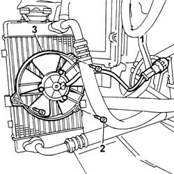

1084C32 Engine oil radiator cooling FAN - R.R.
- Path
- Procedures > 10 ENGINE > 1084 ENGINE LUBRICATION > 1084C ENGINE OIL COOLING CIRCUIT > 1084C32 Engine oil radiator cooling FAN - R.R.
- Kind
- repair procedure (removal / refitting; the operation number is the code)
- Applies to
- engines: 2.4 JTD 20V; all production periods
- Interactive page
- https://sloeber94.github.io/elrnDB-lThss/en/#/851227
Applies to: engines: 2.4 JTD 20V; all production periods
 Removing
Removing
 Refitting
Refitting- Position the vehicle on a lift.
- Open the boot and disconnect the negative battery terminal.
See in Op. 4450B02 Left FRONT WHEEL (one) - R.R.
See in Op. 7055B64 Engine compartment DUST SEAL in front wheel arch (one), left or right - R.R.
1. Disconnect the engine oil radiator cooling fan electrical supply connection.
2. Unscrew the bolts securing the fan to the engine oil cooling radiator.
3. Remove the engine oil cooling radiator fan.

Applies to: engines: 2.4 JTD 20V; all production periods
Refitting
Removing- Fit the engine oil cooling radiator fan.
- Tighten the bolts securing the fan to the engine oil cooling radiator.
- Connect the engine oil radiator cooling fan electrical supply connection.
See in Op. 7055B64 Engine compartment DUST SEAL in front wheel arch (one), left or right - R.R.
See in Op. 4450B02 Left FRONT WHEEL (one) - R.R.
- Connect the negative battery terminal.
- Remove the vehicle from the lift.
Topics linked from this page (2)
- 4450B02 Left FRONT WHEEL (one) - R.R.
- 7055B64 Engine compartment DUST SEAL in front wheel arch (one), left or right - R.R.